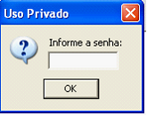

Servidor Caixa - OnLine |
  
|
Servidor Caixa - OnLine |
|
4 – CAIXA COM SERVIDOR ON-LINE VIA HAMACHI;
Passo 01: Instalando Caixa;
●Verificar a versão do Firebird, eliminando fbclient´s de outras versões, deixando apenas a versão 1.5.6;
●Copiar a mesma versão do executável da atualização do Servidor (conttroller_instalar.exe) para o Caixa;
●Executar o conttroller_instalar.exe transferido do Servidor para o Caixa;
●Após instalação/atualização executar o Conttroller_FIBServer ;


Passo 02: CONFIGURAÇÃO do FIB de contingência;
Na aba Propriedades configurar da seguinte forma:

Passo 03: CONFIGURANDO O BANCO;

Ao clicar no botão  aparecerá a janela abaixo que deverá ser configurada da seguinte forma:
aparecerá a janela abaixo que deverá ser configurada da seguinte forma:
Ao término da configuração do banco, clicar em OK. Ao voltar à janela anterior clicar em 
Caso a configuração tenha sido executada com sucesso, ao clicar na aba SOBRE aparecerá a mensagem (CONTINGÊNCIA PAF-ECF) em vermelho;

E aparecerá a seguinte janela na barra de tarefas informando que o banco de dados está conectado:

Acessar a pasta ...\Conttroller\Sistemas e abrir o arquivo conttroller.ini configurando desta forma para acessar o caixa ON-LINE (BASE DO SERVIDOR VIA HAMACHI) e OFF-LINE (BASE LOCAL);
[Parametros]
Banco=0
BlocoDeDados=100
TabularComEnter=1
[0]
descricao=Adicionar Novo Servidor
ip=localhost
porta=9005
[Servidores]
porta=9005
endereco=127.0.0.1
[1]
descricao=ON-LINE (USAR ESTE)
ip= XX.XXX.XXX çççççççççç (IP DO HAMACHI NO SERVIDOR)
porta=9000 çççççççççç (COLOCAR A PORTA DO FIB DO SERVIDOR REFERENTE AO ESTABELECIMENTO)
[2]
descricao = OFF-LINE (NÃO USAR ESTE)
ip=127.0.0.1
porta=9005
Após ter configurado o conttroller.ini, criar um atalho do Automação PAF na área de trabalho da estação do Caixa, clicar em propriedades e acrescentar no destino /SERVIDORES.
SE TRATANDO DE ESTRUTURA DE ACESSO VIA HAMACHI DEVE CRIAR NO SERVIDOR, UM FIB PARA CADA ESTABELECIMENTO COM UMA PORTA DIFERENTE
Passo 05: CONFIGURANDO PARÂMETRO DE ESTAÇÃO;
Acessar o parâmetro de estação e configurar a estação do caixa conforme orientação abaixo: